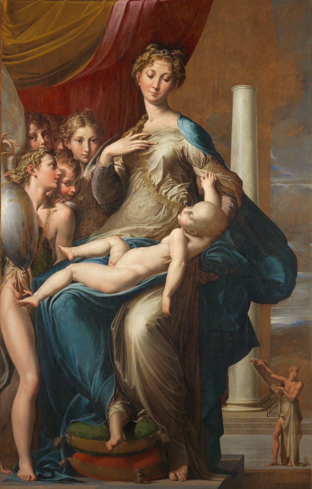
매너리즘

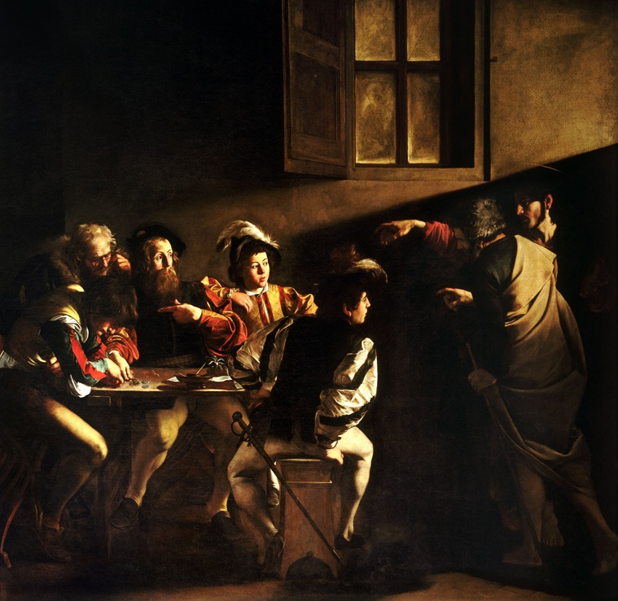
노동자의 손, 늙은 피부, 평범한 옷까지 화면에 들어온다.
빛은 형태를 보이는 기능을 넘어 감정과 의미를 통제한다.
행동이 시작되거나 폭발하는 바로 그 찰나를 선택한다.
관람자는 화면 밖 안전한 위치에 머물기 어렵다.
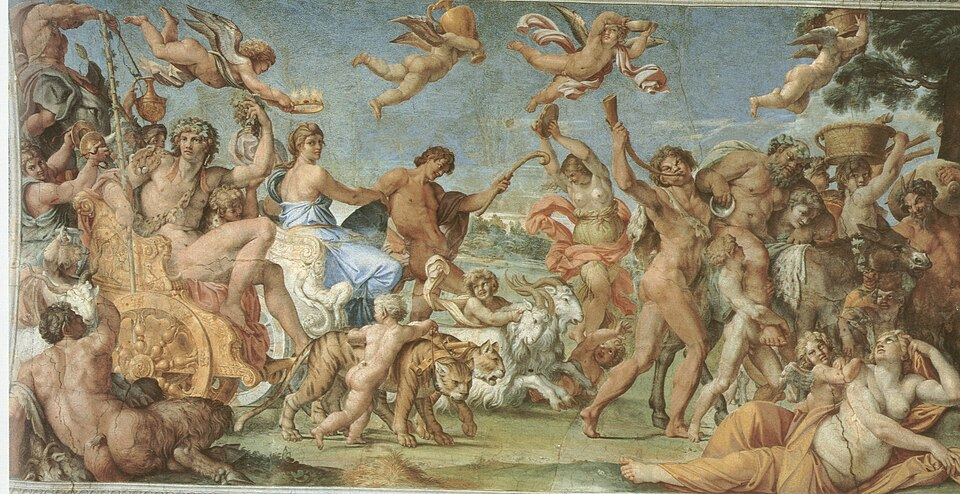
매너리즘의 공식보다 살아 있는 인체와 풍경을 다시 본다.
과거의 대가들을 단순 복제하지 않고 새로운 종합을 만든다.
동작은 활발하지만 화면 전체는 명료한 구조를 유지한다.
자연에서 출발하지만 결과는 장엄하고 조화로운 이상 세계다.
| 비교 항목 | 카라바조 계열 | 카라치 계열 |
|---|---|---|
| 매너리즘에 대한 반응 | 인공성을 버리고 현실의 직접성으로 | 인공성을 버리고 자연과 고전적 질서의 결합으로 |
| 인물 | 비이상화·개별적·현실적 | 자연스러우면서도 이상화 |
| 공간 | 얕고 압축되어 관람자 쪽으로 접근 | 넓고 명료하며 전체 구성이 안정적 |
| 빛 | 강한 명암과 극적 조명 | 형태와 공간을 조화롭게 조직하는 빛 |
| 시간 | 한순간의 사건·행동 | 서사의 지속성과 조화로운 전체 장면 |
| 감정 | 직접적·격렬함 | 고양되고 통제된 감정 |
| 고대·르네상스 전통 | 상대적으로 거리를 둠 | 적극적으로 연구하고 종합 |
| 대표 매체 | 대형 제단화·캔버스 회화 | 대형 프레스코·천장화·제단화 |
| 관람자 효과 | “내 눈앞에서 일어난다” | “웅장하고 완전한 세계를 올려다본다” |
두 계열의 화면은 매우 달라 보이지만, 르네상스 후기의 정적인 완결성과 매너리즘의 양식적 인공성을 넘어 회화를 다시 살아 움직이는 경험으로 만들려 했다는 점에서는 공통된다.
관습적인 공식보다 실제 인체와 현실의 관찰을 다시 중시한다.
정적인 균형보다 변화와 동작을 화면의 중심에 둔다.
관람자가 단순히 이해하는 것을 넘어 느끼게 한다.
그림은 독립된 세계가 아니라 관람 경험을 적극적으로 설계한다.
종교·신화·역사를 더 직접적이고 강력하게 전달한다.
바로크의 공통 핵심은 움직임, 감정, 관람자의 참여, 강한 시각적 효과였다. 그러나 가톨릭 교회·절대왕정·상업 공화국 등 사회구조가 달라지면서 전혀 다른 모습으로 발전했다.
| 국가·지역 | 특징 | 대표 화가 |
|---|---|---|
| 이탈리아 — 로마·볼로냐 | 반종교개혁기의 로마를 중심으로 종교적 사건을 관람자가 직접 목격하는 듯한 극적 공간과 감정을 강조했다. 카라바조의 자연주의와 카라치의 고전적 종합이 중요한 두 출발점이다. | 카라치, 카라바조, 베르니니 |
| 플랑드르 — 플랑드르 바로크 | 가톨릭 교회와 합스부르크 궁정의 후원 아래 거대한 인체, 풍부한 색채, 격렬한 운동감이 결합했다. | 페테르 파울 루벤스, 안토니 반 다이크 |
| 네덜란드 공화국 — 네덜란드 황금기 | 이 시기의 네덜란드 회화는 보통 네덜란드 황금기 회화로 불린다. 대형 가톨릭 제단화보다 시민·상인 시장을 위한 초상화, 풍속화, 풍경, 정물화가 크게 발전했으며, 극적 빛과 심리적 집중이라는 바로크적 요소는 유지된다. | 프란스 할스, 렘브란트, 베르메르 |
| 스페인 — 스페인 바로크 | 가톨릭 신앙의 강한 종교성과 궁정문화가 결합했으며, 성인과 평범한 인간을 물질적으로 생생하게 묘사하는 사실성이 강하다. 벨라스케스는 정확한 관찰과 사실적 존재감, 절제된 색조, 가까이서 보면 자유롭고 거친 듯하지만 멀리서 하나의 생생한 형태로 합쳐지는 붓질로 19세기 사실주의와 마네 이후의 인상주의적 회화 감각에 큰 영향을 주었다. | 수르바란, 벨라스케스, 무리요 |
| 프랑스 — 프랑스 바로크 | 바로크 내부에서 고전주의적 질서와 절제를 더 강하게 선호했으며, 루이 14세 시대에는 왕권과 국가의 장엄성을 보여주는 궁정미술로 발전했다. 이는 별도 범주의 막대가 아니라 프랑스 바로크의 지역적 경향이다. | 푸생, 클로드 로랭, 샤를 르브룅 |
바로크는 단순히 장식이 많은 양식이 아니다. 종교개혁 이후 가톨릭 교회가 감각적으로 강한 이미지를 필요로 했고, 절대왕정과 도시 시민 사회가 각자 다른 시각 언어를 요구하면서 빛, 몸짓, 공간, 관람자의 위치가 모두 극적으로 바뀐 사조다.
문서 앞부분에서 먼저 다룬 카라바조, 아르테미시아, 안니발레 카라치도 이 대표작 모음에 함께 넣었다. 두 이탈리아 출발점과 카라바조주의의 확산을 각 지역 바로크와 한 흐름으로 비교할 수 있다.
평범한 로마인의 어두운 실내에 한 줄기 빛이 들어오며 성스러운 사건이 현재의 현실이 된다. 강한 명암, 가까운 시점, 행동이 막 시작되는 순간이 카라바조식 바로크의 출발점이다.
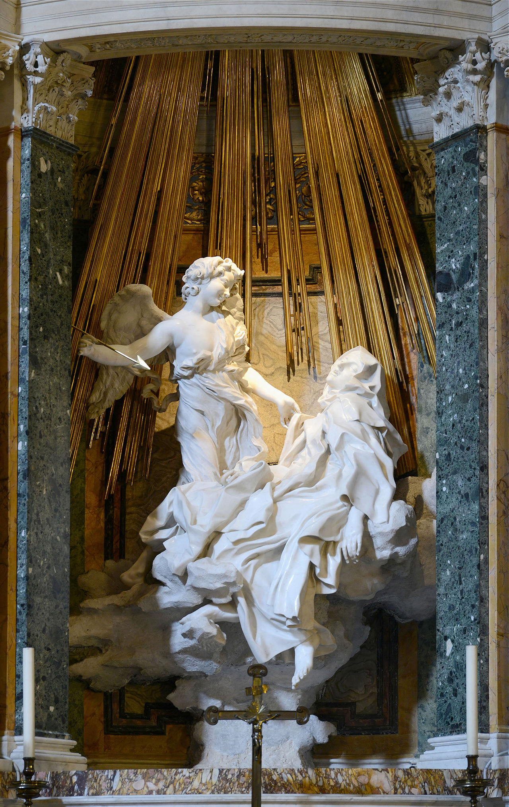
조각, 건축, 숨은 창의 빛, 관람석 같은 측면 장치가 합쳐져 성인의 환시를 실제 무대처럼 경험하게 한다. 바로크가 매체의 경계를 넘어 관람자를 사건 안으로 끌어들이는 방식을 보여준다.

인물들이 십자가에서 사선으로 쏟아져 내려오며 화면 전체가 하나의 몸짓이 된다. 풍부한 색채와 육체적 무게, 집단적 감정이 플랑드르 바로크의 핵심을 압축한다.
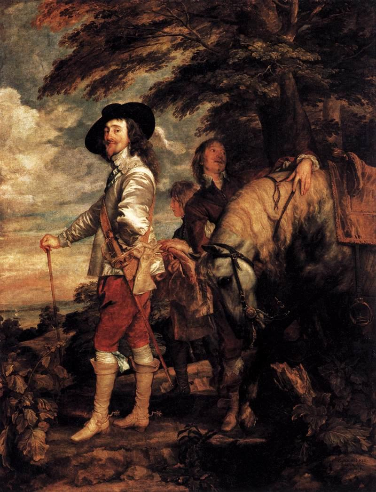
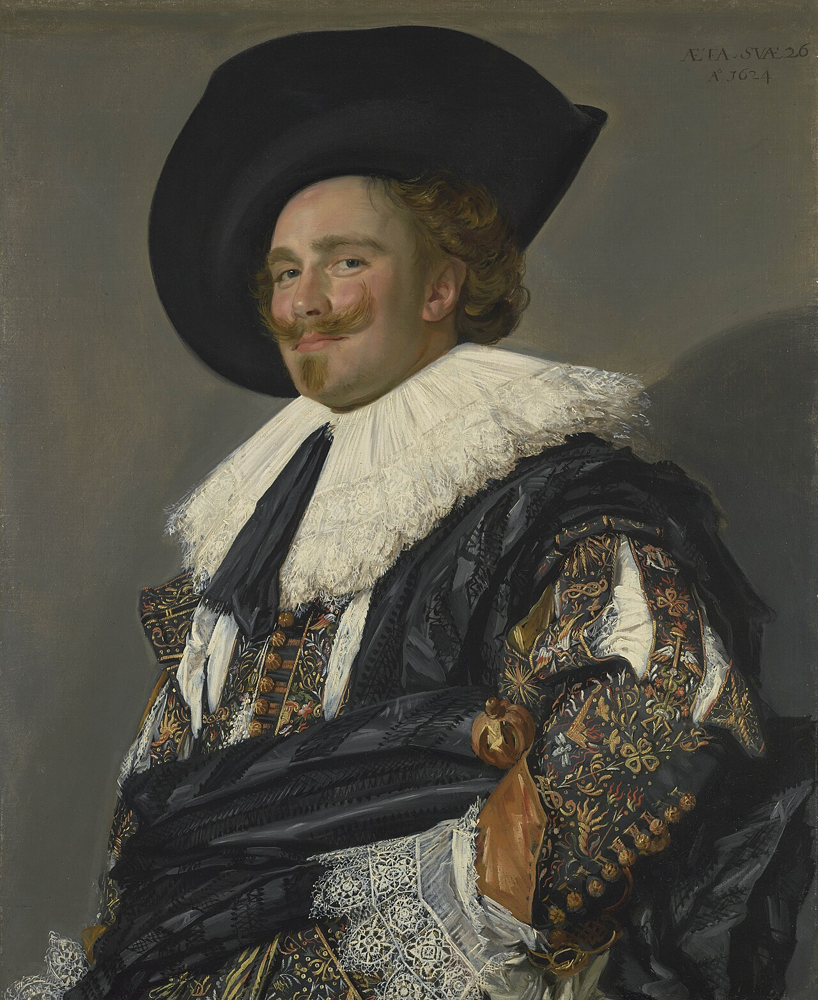

집단 초상을 행진 직전의 사건처럼 만들었다. 빛은 인물을 단순히 밝히는 장치가 아니라 시민 공동체의 활력과 심리적 긴장을 조직하는 힘으로 작동한다.

거대한 사건은 없지만, 어둠 속에서 얼굴과 진주가 떠오르는 순간이 강한 집중을 만든다. 네덜란드 바로크가 일상의 고요함 속에서도 빛의 드라마를 만들 수 있음을 보여준다.
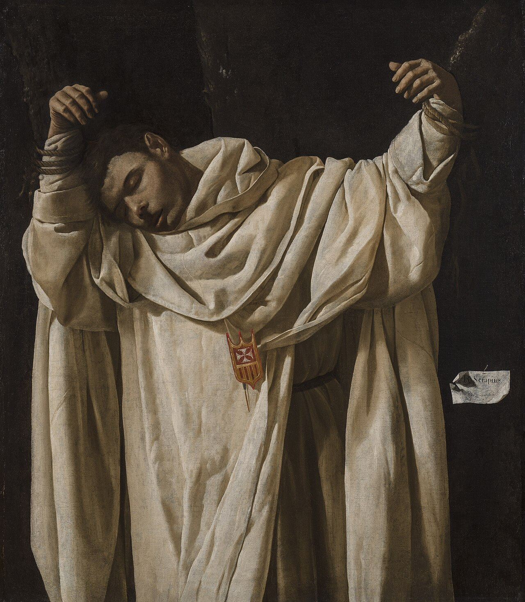
흰 수도복의 무게와 침묵이 화면을 지배한다. 카라바조적 명암을 받아들이되 폭발적 행동보다 순교 직후의 정적과 물질감으로 스페인 수도원 바로크의 엄숙함을 드러낸다.
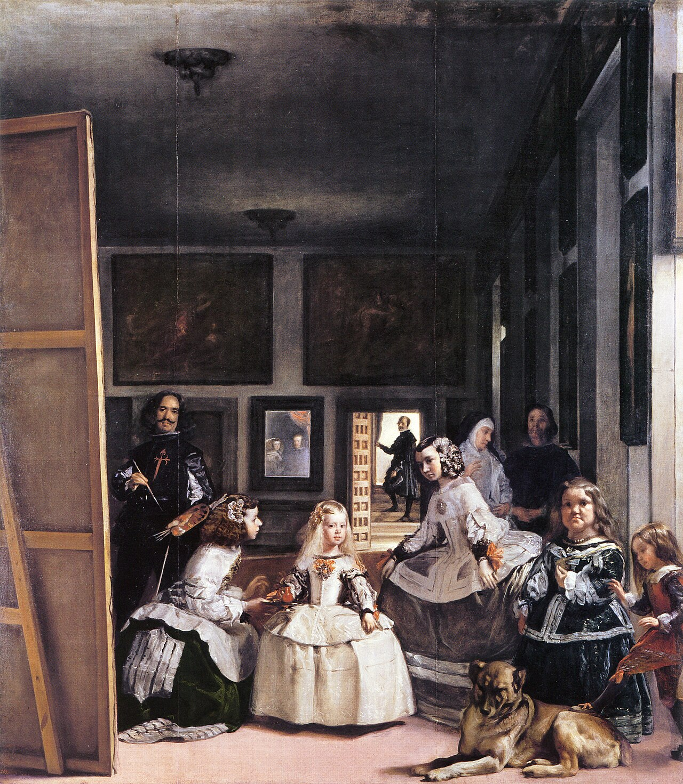
궁정 초상, 작업실, 거울 속 왕과 왕비, 관람자의 위치가 한 화면에서 뒤섞인다. 스페인 바로크가 단순한 사실 묘사를 넘어 시선과 권력의 구조까지 회화의 주제로 삼았음을 보여준다.
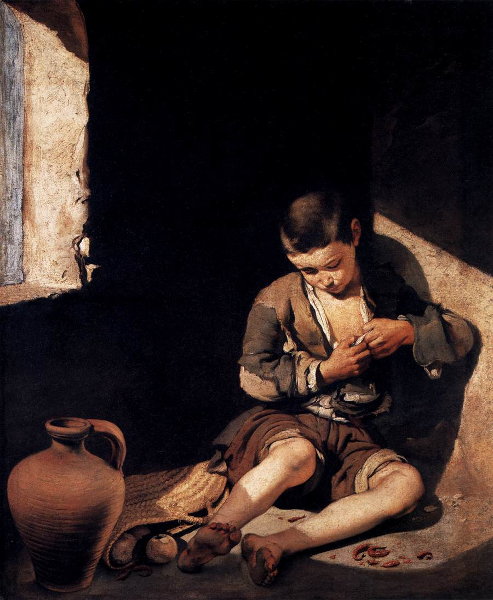
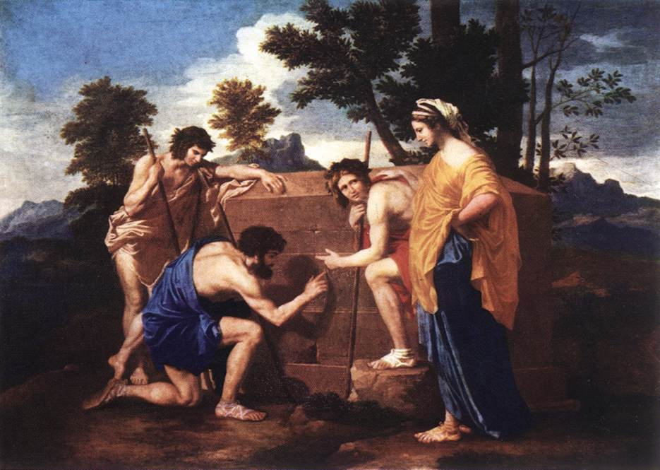
감정의 폭발을 절제하고 인물의 위치, 제스처, 고전적 풍경을 엄격하게 배열한다. 프랑스 바로크가 격정보다 이성적 구성과 도덕적 사유를 중시한 방향을 대표한다.
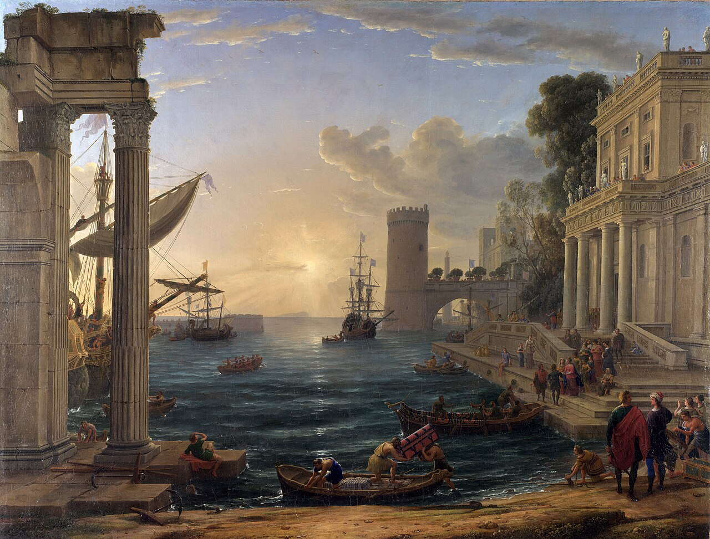
주제는 성서 이야기지만 화면의 주인공은 새벽빛과 고전적 항구 공간이다. 클로드는 바로크의 극적 빛을 격렬한 명암이 아니라 이상적 풍경의 질서와 원경으로 바꾸었다.
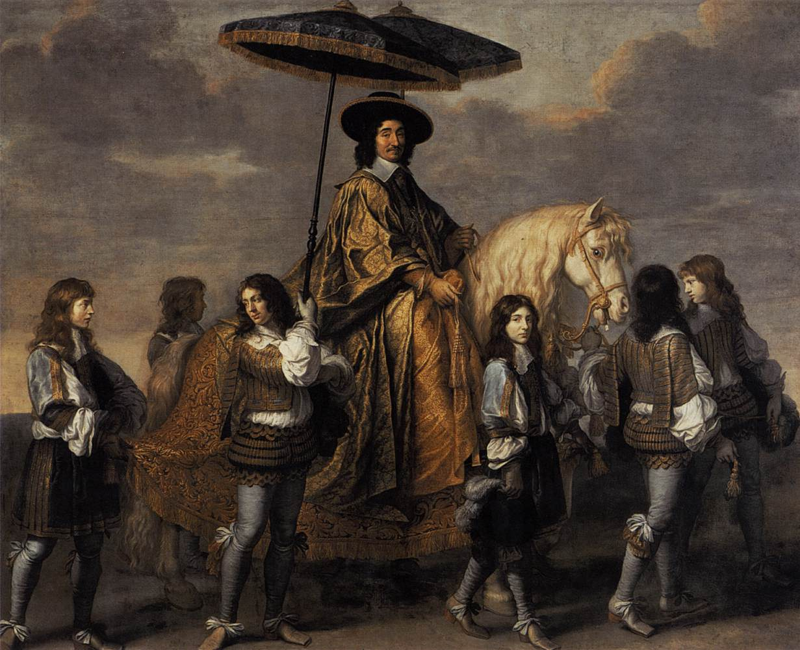
프랑스 바로크의 에너지는 궁정 의례와 국가적 위계로 정리된다. 말, 수행원, 의상, 행렬의 질서가 개인 초상을 왕권 주변의 공식 이미지로 확장한다.